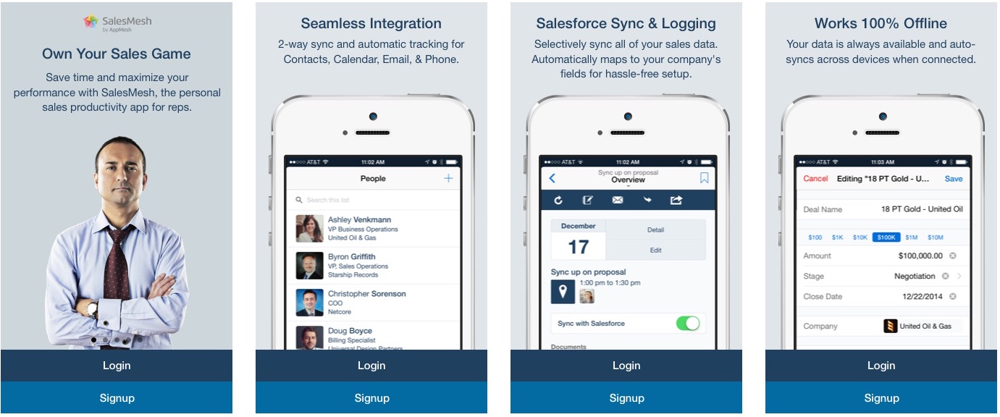
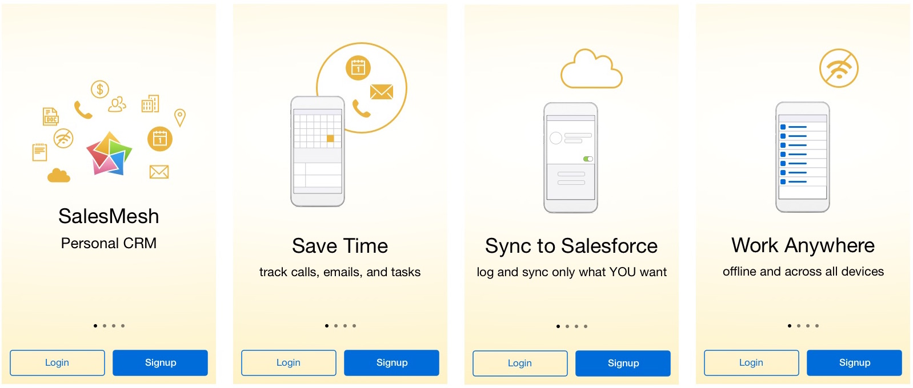
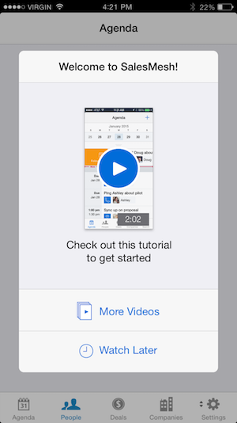
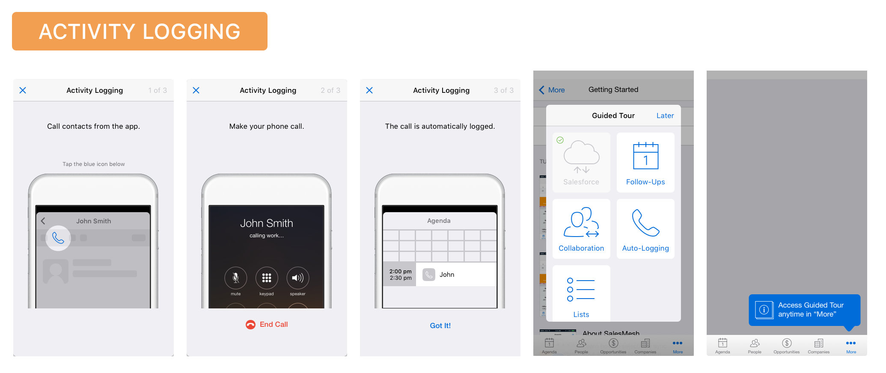
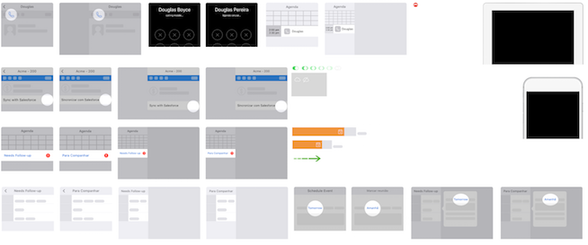

ABOUT SALESMESH
I was one of two designers for a startup that created a personal CRM app called SalesMesh. I led a variety of projects, including the user onboarding redesign.
Salesmesh provided a way for outside sales reps to manage their “second book” of opportunities that they were not yet ready to share with their managers. This iOS app could sync data with Salesforce and let reps track their opportunities and contacts.
PROBLEM OVERVIEW
We decided to redesign the onboarding flow because the metrics indicated a significant drop-off among first-time users. As a result of our redesign, the retention rate increased from 18% to 29%.
MY RESPONSIBILITIES
- Create design specs, prototypes, and visual assets
- Interview active users and conduct usability tests
- Define personas and user flows
- Identify and review metrics
TOOLS
- Sketch
- Flinto
- UserTesting.com
- HTML/CSS/JavaScript
- xCode
SHORT TERM SOLUTION
I started by conducting some interviews with experts on onboarding best practices. I also did research online and studied the onboarding strategies of other apps to learn about best practices. My key take-away was that successful apps must always demonstrate their value to the user as soon as possible.
Our team decided to start with a short-term solution: redesign the intro carousel screens to emphasize value, and provide a “welcome dialog” to give new users access to an introductory overview video and other in-app tutorial videos. The goal was to more clearly communicate the value of our app, and showcase our top features.
Original Carousel Screens
Redesigned Carousel Screens
New Welcome Dialog (Short-Term Solution)
LONG TERM SOLUTION
I iterated through a series of 20 possible onboarding solutions and tested them with sales reps through usertesting.com.
Our final solution involved indirectly inferring which persona a user was based on a couple qualifying questions, then presenting a tutorial to highlight the feature most relevant to them. Each persona was presented with a mini tutorial highlighting the feature most relevant to them. They could also opt to do other tutorials afterward, or skip the tutorial and come back to it later in a new section of the app.
The other solutions we tried included asking users to self-identify their needs, screen-by-screen walkthroughs, and demo data. None of these worked, because they required too much cognitive effort, were un-engaging, or posed too much risk to the user’s personal data, respectively.
I created design specs for all device-specific variations, loading states, error states, and empty states that might occur. I also included where to track metrics, and provided animated prototypes to clearly communicate the new designs. Finally, I created all variations on the visual assets.
Sample Tutorial (Long-Term Solution)
Some of the Visual Assets
FINAL IMPLEMENTATION
The video below shows the published onboarding experience. This demo would be for a new user who did not use Salesforce, and chose not to immediately import contacts or connect a calendar.
REFLECTIONS
This project helped me understand that the most important aspect of onboarding is how effectively you can show the value of your product to your user. Also, I learned that it is vital to find as many ways as possible to reduce the work that users have to do to get to their first “win” in the app.